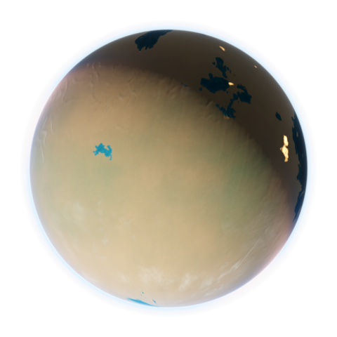
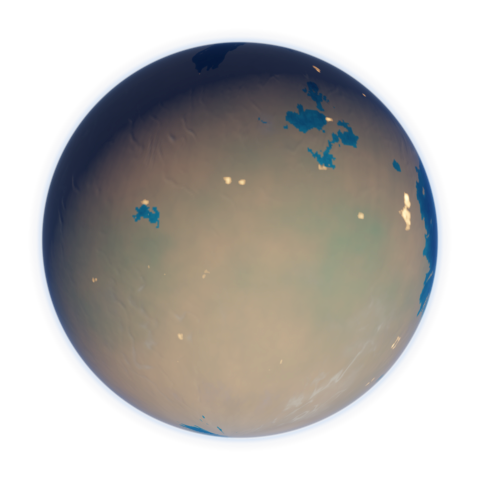

Rust renderer: seeded terrain maps, CPU path-traced icon mode, relief normals, cloud shadows, ocean Fresnel/specular, reflection map sampling, atmospheric Rayleigh/Mie approximation, time-evolved currents/clouds/magnetism, city lights, rings, ACES tone mapping, and quality-controlled downscale. Outputs: icon 480x480, banner 854x480, maps 960x480.